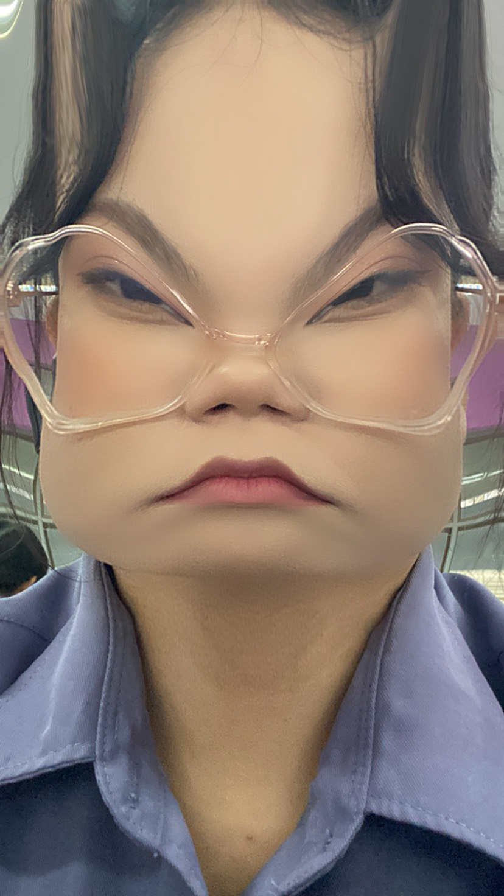

จดหมายที่จะบอกนั่นก็ครือออ เป็นแฟนกันมุ้ยสุดหล่อ
จริง ๆ หนูก็ขอพี่หลายรอบละ ถ้ารอบนี้นกอีกรอบคงไม่เป็นไร(้เป็น)
หนูว่าเราก้เข้ากันได้ดีนะ พี่ไม่คิดงั้นเหรอ หรือว่าหนูอาจจะเด็กไปก้เข้าใจได้ แต่เด็กก็รักเป็นนะ
จริง ๆ ตอนนี้เราก็แทบจะเป็นแฟนกันละ ทำทุกอย่างเหมือนแฟนสุด ๆ อะ
เอาจริง ๆ ช่วงแรก ๆ หนูก็ไม่ได้รีบที่จะมีแฟนขนาดนั้นหรอก แต่เราก็คุยกันมาจะปีนึงละอะ
พี่เคยบอกว่าอยากคุยกันถึง 2 ปี อันนั้นมันก็(TT นานไป)
ความรู้สึกที่หนูมีให้พี่มันเพิ่มขึ้นทุกวันจริง ๆ นะ และพี่ก็ดีกับหนูมาก ๆ ด้วย
หนูอ่านเจอมาความดีแลกความรักไม่ได้มันคนละส่วนกัน แต่สำหรับหนูมันแลกได้
สำหรับคนอื่นหนูไม่รู้หรอก และหนูก็ไม่รู้ด้วยว่าความรักและความดีที่หนูมีให้พี่มันพอรึเปล่า
แต่ว่าหนูก็มั่นคงกับความรู้สึกของตัวเองนะ ไม่ได้เปลี่ยนใจอะไรง่าย ๆ หรอก
แต่ที่พี่พูดมาก็มีเหตุผล ที่พี่บอกว่ากลัวไม่สนใจหนู แต่ว่าไม่ได้แปลว่าพี่จะไม่สนใจตลอดนี่นา
(หน้าต่อไปหน้าสุดท้ายละ)